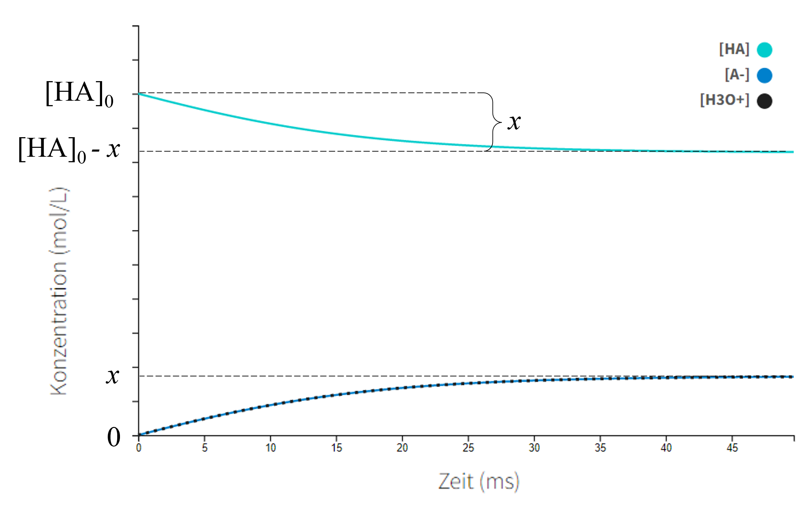

Hilfreiche Informationen
Konstanten:
- Ionenprodukt des Wassers (bei 25° C):
KWasser = [H3O+][OH-] = 1·10-14 mol2 L-2
- pKS-Werte:
- pKB-Werte:
- Ammoniak: 4,75
- Cyanid-Ion: 4,60
- Methylamin: 3,34
- Anilin: 9,37
Gleichungen:
- Dissoziationskonstante für Säuren: Ks =[A-][H3O+] / [HA]
- Dissoziationskonstante für Basen: Kb =[BH+][OH-] / [B]
- Logarithmische Form: pKx = -log10(Kx)
- Logarithmus eines Produkts: log(a·b) = log(a) + log(b)
- Logarithmus eines Bruches: log(a/b) = log(a) - log(b)
Abbildungen:
TitrationsaufbauEinblenden

Oben: Bürette mit Maßlösung. Unten: Erlenmeyerkolben mit Probelösung.
Bildnachweis: Matthias M., CC BY 2.0 | (Originalbild anschauen)
Frage 2 grafische DarstellungEinblenden

Fakultative Hinweise
Frage 2Einblenden
Versuchen Sie, zuerst das Massenwirkungsgesetz für dieses System zuerst aufzustellen, bevor Sie es in die logarithmische Form umwandeln. Um die gewünschte Gleichung herzuleiten muss auch eine Näherung vorgenommen werden und zwar, dass der dissoziierte Teil x viel kleiner als die Anfangskonzentration [HA]0 ist.
Frage 7aEinblenden
Denken Sie zunächst an Ihre Ziellösung, wobei die Konzentrationen der Henderson-Hasselbalch-Gleichung entsprechen sollten. Es gibt unendlich viele Lösungen für dieses Problem, je nachdem, wie konzentriert Sie Ihren Puffer haben wollen. Wenn Sie nicht weiter wissen, setzen Sie Ihre Ziellösung mit 0,100 M Essigsäure und der entsprechenden Menge Acetat an (die Sie berechnen sollen)!
Frage 7bEinblenden
Dieses Problem ist mathematisch komplizierter, da das gesamte Acetat als Bestandteil des Puffers durch Reaktion von NaOH und Essigsäure hergestellt werden muss.

Frage 8aEinblenden
Behandeln Sie das Problem einfach wie eine Lösung einer schwachen Säure.
Frage 8cEinblenden
Bei der Berechnung des pH-Werts am Äquivalenzpunkt kann das System als Lösung einer schwachen Base behandelt werden, wobei pKb bekannt ist. Achten Sie auf die Änderung des gesamten Volumens der Lösung.
Frage 9bEinblenden
Überlegen Sie sorgfältig, wie ein pKb-Wert in einer Titrationskurve dargestellt wird.